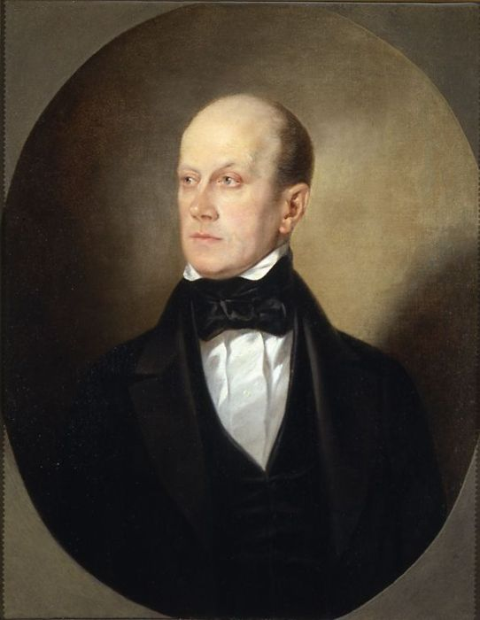
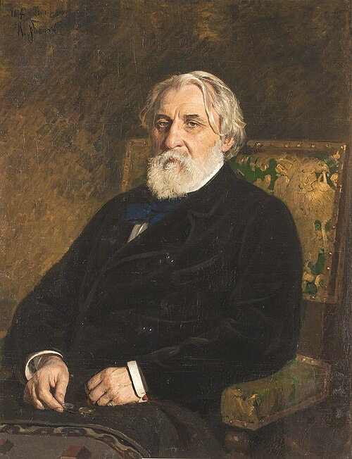

Intelligentsia and the People

oThe historical emergence of the Russian intelligentsia in the nineteenth century, as described by Isaiah Berlin in Russian Thinkers and Derek Offord in A History of Russian Thought, provides essential context for Leo Tolstoy's Anna Karenina. The intelligentsia was not merely a class of educated elite individuals. They were a very moral and intellectually conscious class that viewed themselves as a “secular priesthood,” committed to transforming Russian society through their ideas (Berlin 133). Offord offers an extension of this account by arguing that the intelligentsia did not merely describe the Russian people but that they actively constructed the narod as an ideological figure shaped by its own anxieties about identity and modernity.
The origins of the intelligentsia are tied to the reforms of Peter the Great, which created a cultural divide between a highly Westernized elite and a largely illiterate “dark class” of peasants (Berlin 133). This “social schism” ultimately produced a small, educated class aware of the gap between Russia and Western countries (Berlin 133). By the early nineteenth century, this class — the intelligentsia — felt a strong sense of moral responsibility. Romantic doctrines, such as the belief in the unity of personal and social purpose and the moral duty of the individual, encouraged the intelligentsia to see themselves as necessary agents of historical change for Russia. They simultaneously experienced a sense of nationalism and a feeling of shame at Russia’s current condition. Characters in Anna Karenina mirror this defining feature of the intelligentsia: the dual shame and pride in Russia. For example, Levin is depicted as constantly struggling to reconcile ideal principles with reality. Levin’s fixation on reconciling his thoughts on peasants, faith, and the meaning of life with the actuality of practice reflects this intelligentsia-esque obsession with aligning theory and practice. A crucial factor that ultimately shaped the intelligentsia was the influence of Romanticism and German philosophy. Berlin emphasizes that these thinkers absorbed ideas very intensely from a variety of thinkers (such as Hegel and Schelling) because of the lack of competing intellectual ideas in Russia (Berlin 141). Offord also argues that the Russian “people” were not a clearly defined social reality but rather “a construct fashioned in the minds of the intelligentsia” (Offord 241). The Slavophiles tended to idealize the peasants as spiritually ‘pure’ and communal. The Westernizers would often view them as needing reform. However, in both cases, the peasantry functioned as a projection of intellectual concerns rather than a social category. This historical context thus helps clarify Tolstoy’s treatment of Levin, whose idealism as a rural landowner reflects a broader tendency of the intelligentsia to invest the peasantry with moral authenticity while still misunderstanding their actual conditions. Levin’s admiration for peasant simplicity is able to coexist with a frustration at their resistance to reform and his own inability to fully comprehend their worldview. By contrast, his brother Nikolai Levin appears to align more closely with Populist or ‘narodnik’ ideas. He believed that peasant labor and communal organization would allow for social renewal. However, it is important to note that Tolstoy does not necessarily endorse Nikolai’s worldview (through the characterization of Nikolai). Another defining trait of the intelligentsia was their approach to literature. They “invented social criticism” (Berlin 132). Russian writers (unlike more detached Western writers) believed that art and life were inseparable. A writer’s moral integrity was viewed as directly tied to their artistic value. Thus, literature became almost a catalyst for social criticism. Berlin credits this sort of literary criticism to Belinsky, who heavily blurred the line between aesthetic judgment and ethical evaluation of artists: “the kind of criticism in which the line between life and art is of set purpose not too clearly drawn . . .” (Berlin 132) The intelligentsia’s sense of responsibility also dictates the way Tolstoy depicts the “people,” or the ‘narod’, in Anna Karenina. The two competing perspectives by Westernizers and Slavophiles of the narod are both highlighted in the story. While the former viewed peasants as backward and in need of reform, the latter held a much more Romantic view; Slavophiles idealized peasants as having aspirational, authentically Russian lives. In the novel, for instance, Levin’s consistent interactions with peasants reveal both views. He is depicted as frustrated with what he perceives as a lack of efficiency in his life, while also actively seeking moral truth — such as conversing with Fyodor — in his simple approach to life. This sort of tension allows Tolstoy to depict the broader dilemma of the intelligentsia: how to relate to people they felt responsible for but socially distant from. Additionally, Offord’s argument further clarifies that debates surrounding the narod were ultimately debates about the intelligentsia. The ‘people’ were a way for intellectuals to attempt to define Russia’s identity and their own social role. Populists, notably, treated the peasantry as the foundation for a future socialist order, whereas conservatives emphasized Orthodox values. Tolstoy’s novel engages with these two competing ideologies without endorsing either. He instead highlights the gap between mere intellectual ideologies of the narod versus lived human experience. Ultimately, the historical context of the Russian intelligentsia is essential for understanding the profound tension between intellectual thought and the practicalities of life in nineteenth-century Russia. The intelligentsia’s origin in class division, its influence by Western philosophy, its moralization of literature, and its goal of reshaping Russian society are all related to the broader explorations of morality and society in Anna Karenina.
Works Cited
- Berlin, Isaiah. Russian Thinkers. Penguin Classics, 2013.
- Offord, Derek. “The People.” In A History of Russian Thought, edited by William Leatherbarrow and Derek Offord, 241–259. Cambridge: Cambridge University Press, 2010